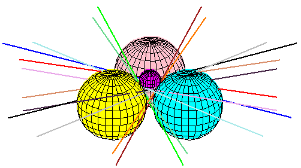

Line problems in nonlinear computational geometry
F. Sottile and T. Theobald.
We first review some topics in the classical computational geometry of lines,
in particular the O(n3+epsilon)
bounds for the combinatorial complexity
of the set of lines in R3 interacting with
n objects of fixed description
complexity.
The main part of this survey is recent work on a core algebraic
problem---studying the lines tangent to k spheres that also meet
4-k fixed lines.

The manuscript in postscript, and in pdf.